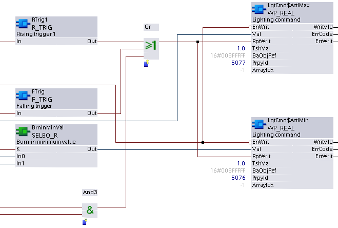

WP_REAL：写入不动产
WP_REAL 写入数据点中数据类型 Real 的指定可写属性或数组元素。尝试写入只读属性或数组元素将导致写入被拒绝并出现错误消息。
Compatible data points:
- Any BACnet data point with a writable property or array element of datatype Real.
参考data point objects有关 BACnet 数据点的详细说明。
Pin description (inputs)
BaObjRef | |
|---|---|
BA-Object reference 结构 [BaObjRef] 定义 XFB 和 BACnet 对象之间的绑定连接。绑定会自动发生。 手动配置尝试是不必要的，并且可能会导致系统错误。 | |
DeviceId | 设备标识符 双字（默认值：16#3FFFFF） [DeviceId] 在单个标识符中包含对象类型和对象实例。 它用于识别设备对象：本地或远程。本地设备对象也可以通过值 16#3FFFFF 来标识。 |
ObjectId | 对象标识符 双字（默认值：16#3FFFFF） [ObjectId] 在单个标识符中包含对象类型和对象实例。 它用于识别设备内的对象。 |
ItemId | 物品标识符 整数（默认值：-1） [ItemId] 表示功能视图节点对象中的项目索引，它引用 BACnet 对象。 [ObjectId] 和 [ItemId] 一起定义对 BACnet 对象的间接访问引用。 值-1表示使用直接绑定。 |
TshVal |
|---|
Threshold value 实数（默认值：0.1） 用于控制 XFB 写入尝试的参数化值。仅当值差等于或大于 [TshVal] 时才允许尝试。 Note |
瓦尔 |
|---|
Value 实数（默认值：0.0） 由控制程序分配的计算值（或固定值，可以根据设计需要设置），用于更新属性或数组元素。 如果出现以下情况，将写入 [Val]：
|
RptWrit | |
|---|---|
Repeat write 布尔值（默认值：False） [RptWrit] 强制将 [Val] 写入属性或数组元素。只要 [RptWrit] 为 True，每个程序周期都会重复写入操作。 [RptWrit]通常由控制程序计算和设置。 Note | |
1（正确） | 如果 [EnWrit] 为 True，则只要 [RptWrit] 为 True，就会在每个程序周期将 [Val] 写入属性或数组元素。 |
0（假） | 没有行动。 |
EnWrit |
|---|
Enable write 布尔值（默认值：True） 当为 True 时，[EnWrit] 允许将输入 [Val] 和 [SetValid] 中的值写入计算值对象。 如果满足以下条件，[Val] 和 [SetValid] 将被写入：
|
PrpyId |
|---|
Property identifier 整数（默认值：0） 正在写入的属性的参数化 BACnet Id 号。 [PrpyId] 可以设置为 BACnet 对象中的任何可写属性。 |
ArrayIdx | |
|---|---|
Array index 整数（默认值：-1） XFB 要访问的数组元素的索引号。 [ArrayIdx] 表示可选参数化输入，用于指定对数据类型 BACnetARRAY 或 BACnetPriorityArray 的属性元素的访问。 [ArrayIdx] 在运行时无法更改。 | |
= -1 | [ArrayIdx] 未使用。 |
= 0 | (0) 指定引用属性的数组长度。由于写入该字段不是控制程序的功能，因此对 [ArrayIdx] 0 的请求将被 XFB 拒绝。 |
> 0 | 参数化值。 |
Pin description (outputs)
WritVld | |
|---|---|
Write valid 布尔值（默认值：False） 指示上次写入尝试是否成功。 [WritVld] 保持最后的写入状态（True 或 False），直到由下一次写入尝试重置。 | |
1（正确） | 上次写入尝试成功。 |
0（假） | 上次写入尝试未成功。 |
ErrCode | |
|---|---|
Error code indication 整数（默认值：20） 上次执行 XFB 读操作的状态。 | |
= 0 | 没有错误。 |
> 0 | 错误，请参阅XFB error codes. |
ErrWrit | |
|---|---|
Error while writing 整数（默认值：20） 上次执行 XFB 写操作的状态。 | |
= 0 | 没有错误。 |
> 0 | 错误，请参阅XFB error codes. |
Use case examples
NOTICE

Note
图形反映了 XFB 实现的示例；有关 CFC 的当前示例，请参阅 ABT。
由于图形大小的限制，功能块可能会丢失或显示得比典型的更紧密地分组。
